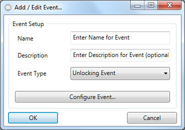

Creating Events - Select an Event

- Please enter a unique name for the event you would like to create.
- Not mandatory: you could add a description to the event wich will be
shown in the main application window when hovering over the event with your
mouse arrow.
- Select from one of three possible types of events:
- "Unlocking Event":
A Transponder has been used on an online lock. The lock has returned an
"access denied" or "access granted" event.
- "Door Monitoring Event":
Someone has used a door which is equipped with an properly configured
doormonitoring lock resulting in an door monitoring event such as "door
has been opened"
- "Input Event":
One of the three physical inputs of an "WaveNetManager RouterNode with
IO functions" has changed its state.
- Click on "Configure Event" to define the criteria on which one or more
added responses will be fired up.
- Click on "OK" to add the configured event.
BE AWARE: You could only create events which has been configured beforehand.